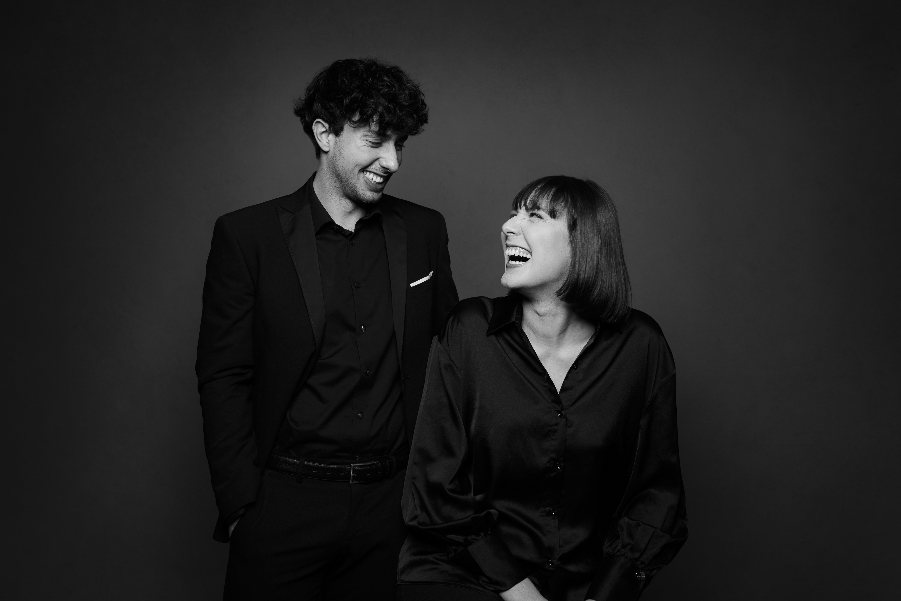
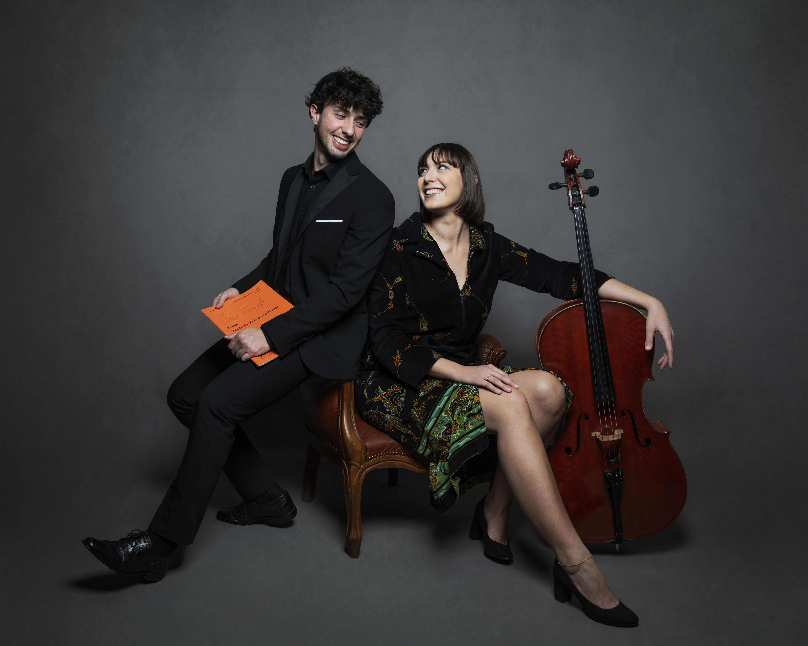
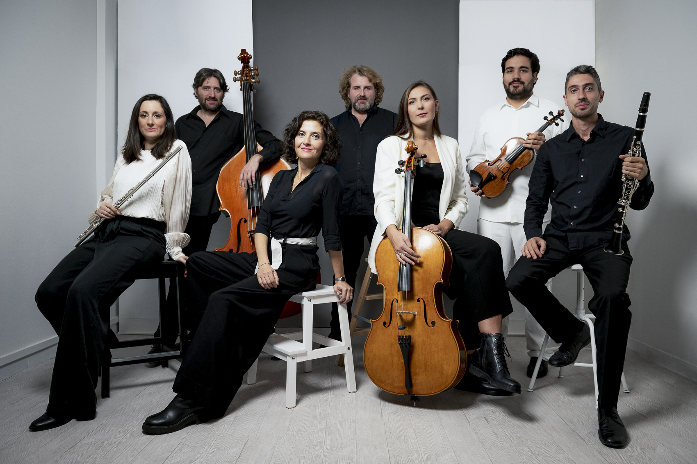

Projects
Progetti & collaborazioni
Musica da condividere.
La musica da camera e i progetti educativi affiancano il percorso solistico di Matilde: occasioni di incontro, collaborazione e ascolto.
Musica da camera
Duo con Simone Sammicheli
Violoncello e pianoforte
Matilde Agosti e il pianista Simone Sammicheli suonano regolarmente insieme dal 2022.


Ensemble
Ensemble Eutopia
L’Ensemble Eutopia si dedica alla diffusione della musica contemporanea, anche in ambito educativo, attraverso percorsi multidisciplinari.
